Самые большие виды медведей
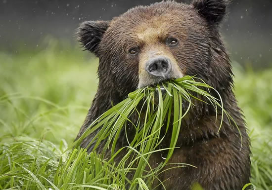Медведи – крупные наземные хищники, представленные большим перечнем видов, и живущие на пространствах Евразии, Северной Америки. Медведи питаются не одним мясом – большинство видов всеядно. Неприхотливость в пище, а также высокая приспособляемость к самым разным условиям позволили им широко распространиться и закрепиться как главным хищникам во множестве экосистем. Тысячелетиями медведь соседствовал с человеком, вызывая... Далее...
Дикие кошки: Азиатская леопардовая кошка
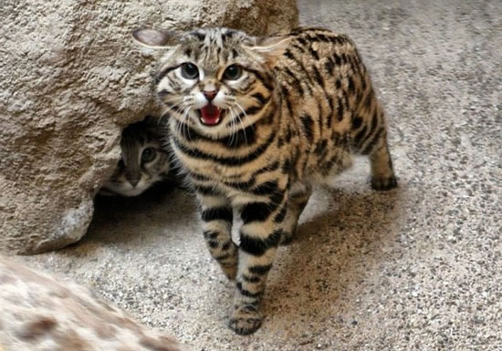Дикий представитель семейства кошачьих — Азиатская леопардовая кошка, которого все чаще можно увидеть в роли домашнего животного. Кроме того, этот вид участвовал в выведении очень известной и популярной нынче породы. Азиатская леопардовая кошка В 1858 году русский исследователь и натуралист Николай Северцов впервые предложил классифицировать диких кошек, обитающих на обширной территории Юго-Восточной Азии. В 1917 году... Далее...
Опасные насекомые которые обитают в России
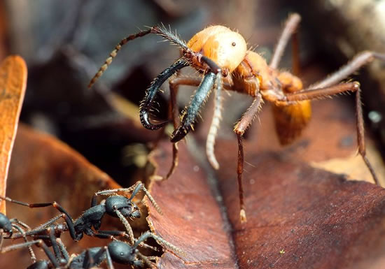В России одними из первых оживают клещи — это опасное членистоногое, которое из-за своего небольшого размера почти незаметно. Кроме клещей, на территории нашей страны обитает бесчисленное множество вредных для человека паукообразных и насекомых. Клещи Это самые многочисленные представители класса паукообразных. На настоящий момент их насчитывается около 48 тыс. разных видов. Но не все из них опасны, считается, что только около 10%... Далее...
Ящерица плащеносная австралийская
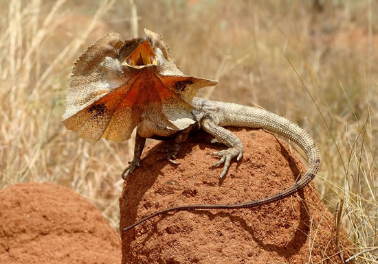У плащеносной ящерицы (заметили название характерное?), на голове расположена складка кожи, наполненная кровеносными сосудами. В момент опасности она ее раздувает, изменяя цвет и тем самым визуально становится больше, пугая хищников. Кроме того, она становится на задние лапы, чтобы казаться выше и убегает тоже на двух лапах. Живет плащеносная ящерица на острове Новая Гвинея и северном побережье Австралии. Это вторая по размеру... Далее...
Змеи: особенности и виды змей
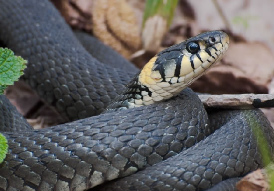Змеи (Serpentes) – одни из самых своеобразных обитателей планеты Земля. Они, как никакие другие животные, подвержены гонениям людей, преследующих их с давних пор и убивающих без разбора ядовитых и неядовитых, а последних, нужно сказать, большинство: из известных науке 3200 видов змей, ядовиты только около 410 видов, а в бывшем СССР и того меньше – из 58 видов ядовитыми являются лишь 11. Вытянутое тело змей может достигать в длину от 10 см до 9 м.,... Далее...
Цебидихтис
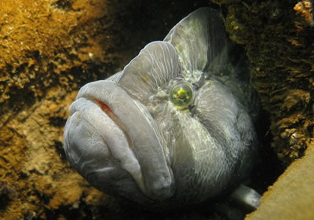Угорь с лицом обезьяны – так местные жители прозвали цебидихтиса (лат. Cebidichthys violaceus), лучеперую рыбу из отряда окунеобразных. Круглая голова с крупным ртом и большими выпуклыми глазами действительно придают цебидихтису забавное сходство с мартышкой, а узкое и вытянутое, до 75 см в длину, туловище напоминает угря. Тем не менее, цебидихтисы являются полноценными костными рыбами, входящими в подсемейство восьмилинейных морских вьюнов... Далее...
Южноавстралийский угрехвостый сом
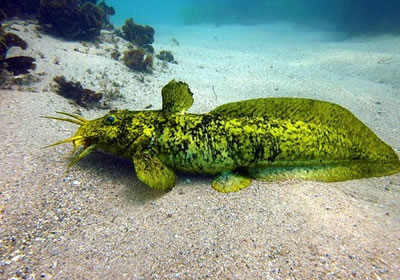Если голову сома прикрепить к туловищу угря, то получится рыба, очень похожая на головастика-переростка и известная как южноавстралийский угрехвостый сом (лат. Cnidoglanis macrocephalus). Однако этот эндемик австралийского континента, обитающий в нескольких штатах, на острове Тасмания и на прибрежных коралловых рифах, далеко не такой безобидный, как лягушонок. Чтобы хоть как-то защищаться от своих главных врагов — пеликанов и бакланов,... Далее...
Крокодиловый сцинк
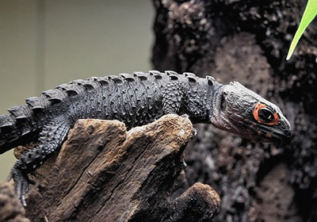Если бы не яркие красные ободки вокруг глаз, красноглазого крокодилового сцинка (лат. Tribolonotus gracilis) вполне можно было бы принять за миниатюрную, длиной 18-20 сантиметров, копию обычного крокодила. Подобно своему более крупному сородичу, красноглазый крокодиловый сцинк предпочитает жить в болотистой местности, как можно ближе к источникам пресной воды. Тропические заросли богаты вкусной и питательной пищей – улитками, личинками,... Далее...
Шишконосая агама
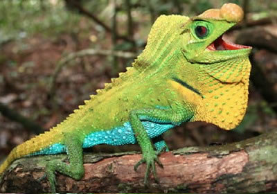Состояние популяции шишконосой агамы (лат. Lyriocephalus scutatus) биологи оценили как «близкое к угрожающему». Этот вид агам можно встретить только на Шри-Ланке, в районах, площадь которых не превышает 17,4 квадратных километров. Шишконосые агамы переживают не самые лучшие времена из-за вырубки лесов и развития сельского хозяйства в местах их обитания. Однако из-за того, что эти рептилии не имеют привычку скапливаться в одном изолированном... Далее...
Шимпанзе
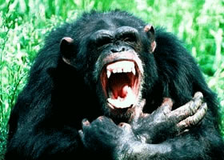Шимпанзе (латинское название «Pan») – это род человекообразных обезьян, отряда Приматов, семейства Гоминидов. Выделяют два вида: Обыкновенный шимпанзе и Карликовый шимпанзе. Признаки Ростом шимпанзе достигает 1,3—1,7 метра. Голова удлиненной формы. Туловище широкоплечее, бочонкообразное, руки опускаются ниже колен. На ногах — большой палец отделен от прочих выемкой, а перепонка, соединяющая пальцы руки, доходит до 0,5 первого... Далее...
Павиан
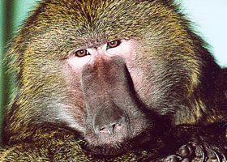Павианы или «собакоголовые обезьяны» (латинское название «Papio») — род обезьян из отряда приматов, подотряда Узконосов, семейства Собакоголовых Мартышковых. Род Павианы насчитывает пять видов: Анубис; Бабуин; Гамадрил; Гвинейский павиан; Медвежий павиан. Признаки Морда павианов очень удлинена, вздута благодаря расширению верхнечелюстных костей, клыки очень велики. Ноздри у павианов расположены на конце морды, у некоторых других... Далее...
Орангутан
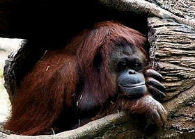Орангутан (латинское название «Simia satyrus») – род крупных человекообразных обезьян отряда Приматов. Признаки Отличительные признаки рода: череп вытянутый на макушке кверху, массивное тело и конечности, передние конечности достающие до ступней, очень маленький большой палец задних конечностей, отсутствие мозолистых утолщений на ягодицах. Взрослый самец достигает вышины в 135 сантиметров, при расстоянии между концами распростертых... Далее...